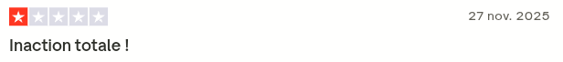
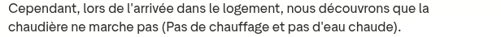
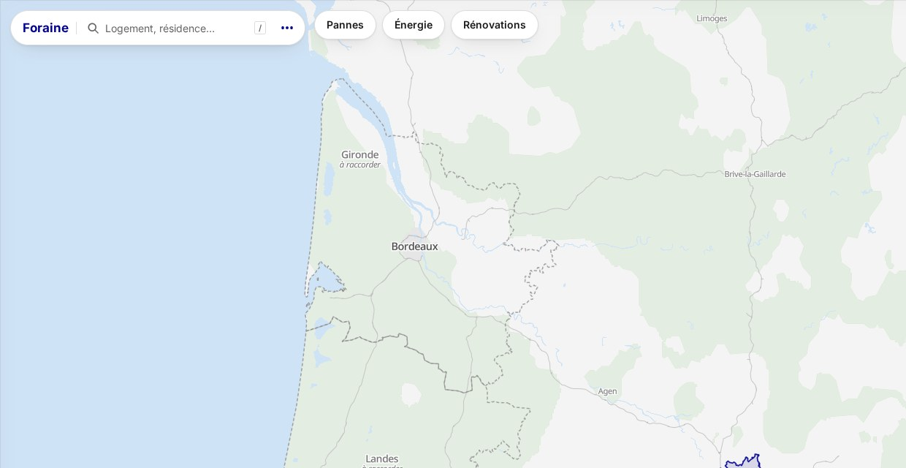

BâtIA
Voir venir les pannes. Ordonner les rénovations.
La panne,
on la subit.
logements In'li Sud-Ouest (site officiel)
équipements en panne bloquante (données du défi, janvier-septembre 2025)


9 °C à l'intérieurAucune réaction face à la détresse.
Avis d'un locataire sur Trustpilot, 1 étoile, 27 novembre 2025
L'équipe

Briend

Ennedoui

Affane

Bergeot

Chaufoureau

Planson
l'IA de l'équipe
Plusieurs pistes en parallèle,
on garde la meilleure.
on choisit.
Directions visuelles, analyses de marché… et ces diapositives elles-mêmes.
Les maquettes de l'interface
Opus et GPT-6 Astra : des agents en parallèle, chacun sur sa piste
Un bot relié au dépôt GitHub annonce l'avancement
Place
à la démo

Un barème à points, lisible par un technicien.
Chaque raison pèse des points, le total donne une catégorie, et chaque catégorie affiche ce qui s’est vraiment passé l’an dernier.
Pompe à chaleur air/eau · Résidence D · logement 020
- 3 commentaires d’usure du technicien en 12 mois, le dernier : « Réparation provisoire, fiabilité incertaine »+39
- 14,6 ans sur 16 ans de durée de vie, 91 %+35
- Commentaire d’usure écrit pendant un dépannage+28
- La demande du locataire nomme l’appareil, dans les 6 mois+28
- Autres situations : demande du locataire, dépannage récent, panne bloquante réparée, visites manquées+39
Réglé sur 2024, testé sur 2025, sans regarder l’avenir. Au 31 décembre 2024 le barème classe les 1 285 équipements, puis on compte les pannes bloquantes de janvier à septembre 2025.
Données du kit seulement · 1 285 équipements, environ 10 000 interventions de 2018 à 2025 · barème dans poc/preavis/moteur/BAREME.md
Même budget, meilleur ordre.
Rapporté aux 6 239 logements d'In'li Sud-Ouest : de l'ordre de 80 000 € par an (estimation)
Demain ?
Avez-vous des questions ?
Merci. BâtIA · voir venir les pannes, ordonner les rénovations.